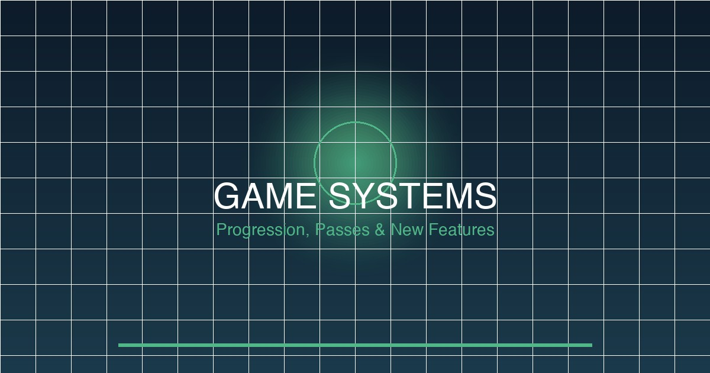

Find answers to the most common Forza Horizon 6 questions below. If you can't find what you're looking for, use the contact form at the bottom of this page.
A: Skill points are earned through driving actions — speed, drift, overtakes, near-misses and more. Points accumulate in three categories: Speed (fast driving), Style (drift/ski control), and Exploration (discovering locations). Higher skill levels unlock faster wheelspins, better credit rewards, and exclusive festival sites. Skills cap at Level 50 per category, with overflow converting to bonus credits.
A: For new players, we recommend the Honda Civic Type R (FK8) — it's forgiving, upgrades are affordable, and it handles well in all conditions. The Toyota GR Yaris is excellent for AWD beginners. For pure fun, the Mazda MX-5 Miata RF offers the best handling-to-price ratio. Avoid high-horsepower cars as your first purchase — they're harder to control and expensive to insure/repair.
A: Barn Finds appear as orange exclamation marks on the map after completing specific achievements. Each barn has a unique unlock condition — some require exploring all roads in a region, others need skill combos, and some are seasonal (snow barns only appear in winter). Our Collectibles Guide has detailed unlock requirements for every barn.
A: Ultimate Edition ($99.99) includes: 3 days early access (April 1, 2026), Year 1 Car Pass (12 months of monthly vehicles), Horizons Bonus Pack 1 (50 cars), Mountains Expansion, and 4 additional formula 1 style vehicles. Standard Edition ($59.99) is the base game only. If you plan to play extensively, Ultimate offers best value.
A: Go to Settings > Transmission and switch from "Auto" to "Manual" or "Manual with Clutch". Manual gives you more control over gear selection and is essential for advanced driving techniques like clutch kick drifting. We recommend starting with "Manual" before trying manual clutch.
A: Complete the main Festival Playlist every week (accessible from the main menu). Each week's playlist awards 100,000+ credits in total plus exclusive items. Speed skill chains on highway routes also earn credits efficiently — find a loop with multiple bonus boards and maintain a 15x+ multiplier. Avoid spending credits on expensive cars until you have 5+ million saved.
A: Seasons change every 4-6 weeks in real time. Winter adds snow and ice physics (reduced grip, different tuning required). Summer brings rain and wet roads. Seasonal collectibles only appear during their specific season — miss them and wait for next year's cycle. You can turn off seasonal effects in Settings > Season Options if you prefer consistent physics.
A: Yes, FH6 supports cross-play between Xbox Series X|S and Windows PC. You can disable cross-play in Settings > Privacy > Cross-Play if you prefer only playing with console or PC players. Cross-play is enabled by default in multiplayer modes.
A: Horizon Adventure mode supports up to 72 players in a shared open world. Convoy racing supports teams of up to 6 per convoy with multiple convoys racing simultaneously. For ranked competitive modes, matches support 4v4 team racing.
A: From your friend's profile in Xbox or Steam, select "Invite to Game". Your friend receives the invite and can accept from their notifications. Alternatively, from inside FH6, go to Social > Friends, find your friend, and select "Join". Make sure you're both in the same region for best connection quality.
A: Check these in order: 1) Run a speed test — below 20 Mbps upload will cause issues. 2) Use a wired Ethernet connection instead of WiFi. 3) Check Xbox NAT type (Settings > Network > NAT Type) — Open NAT is best, Moderate works, Strict causes problems. 4) Forward port 3074 if behind a strict router. 5) Try switching to a different server region in FH6 multiplayer options.
A: In Settings > Vibration & Feedback: Set brake vibration to 100%, steering vibration to 30%. In Controller deadzone: Increase steering deadzone to 8% to prevent drift initiation jitter. In Assists: Set traction control to 0-10% (beginners use 50%), stability control to 0%, steering sensitivity to 7-8 out of 10. These settings give you maximum control for throttle and brake oversteer.
A: Go to Settings > Controller > Custom Controls. Select any action (brake, throttle, handbrake, clutch) and assign it to any button. Popular remaps include putting handbrake on Left Bumper (LB) for easier one-hand operation, and moving clutch to Left Trigger (LT) with brake on Right Trigger (RT). You can save multiple control profiles and switch between them.
A: Go to Settings > Controller and adjust these values: Steering deadzone (try 5-10% if too sensitive), Acceleration sensitivity (reduce if you're unintentionally accelerating), Braking sensitivity (increase if you can't brake hard enough). If playing on keyboard, increase key repeat delay in Windows controller settings.
A: Yes, FH6 has full support for Logitech G29/G923, Thrustmaster T300/T500, Fanatec clubsport, and most USB racing wheels. Enable wheel in Settings > Controller > Wheel Settings. Force feedback strength, pedal sensitivity, and rotation angle are all customizable. Recommended: Set rotation to 900 degrees for street cars, 1080 for race/track cars.
A: This is common with Bluetooth audio devices. Set your Xbox/PC audio output to a lower quality format (48kHz instead of 96kHz) in system settings. Alternatively, use wired headphones or speakers. If using HDMI audio through a receiver, ensure your HDMI cable supports ARC/eARC properly. On PC, update your audio driver and disable exclusive audio mode in Windows sound settings.
A: In Photo Mode, press R3 (Right Stick) to open advanced settings. Set Resolution to "4K" for the highest quality. Enable Depth of Field and adjust Aperture (f-stop) — lower f-stop (f/1.8) gives blurrier background. Enable composition grid for rule-of-thirds alignment. Avoid using flash or HDR effects as they can cause color banding on some displays.
A: Unfortunately no — Photo Mode filters and settings only apply to photos taken within Photo Mode. Regular gameplay screenshots (taken with Xbox button or screenshot tool) use default rendering. For the best in-game photos, enter Photo Mode first, compose your shot with filters, then take the photo there.
A: On Xbox: Go to Settings > Storage and check for Cloud save backup. If available, download from cloud and overwrite local. On PC: Find save files in Documents\ForzaHorizon6\ folder and check OneDrive or backup software for previous versions. If no backup exists, you unfortunately cannot recover corrupted saves — start a new game and disable cloud save sync temporarily if the issue persists.
A: If your Xbox and PC are linked to the same Microsoft account, saves sync automatically via Xbox Cloud. Ensure Settings > Account > Sync Save is enabled on both devices. On PC, also verify your Microsoft Store Xbox app is logged into the same account. Syncing can take up to 5 minutes after launching the game.
A: Base game requires approximately 100GB. With all DLC and updates installed, total can reach 130GB. On Xbox, we recommend keeping at least 200GB free for updates and future expansions. Use external SSD if internal storage is tight — FH6 supports external game storage on Xbox Series X|S.
A: Start with these checks in order: 1) Reduce Shader Cache size in FH6 graphics settings — some GPUs experience cache bloat. 2) Disable VSync in both FH6 and Nvidia/AMD control panel. 3) Cap framerate to 60fps in graphics settings to reduce GPU load. 4) Update GPU drivers (Nvidia 536.23+ / AMD 23.8.1+ recommended). 5) Lower Particle Quality and Shadow Resolution which are most GPU-intensive.
A: Try these settings: Resolution Scale: 85%, Texture Quality: High, Particle Quality: Medium, Shadow Resolution: Medium (512), Reflection Quality: Medium, Motion Blur: Off, Anisotropic Filtering: 16x, VSync: Off, Framerate Cap: 60fps. This should maintain 60fps in most areas. Tokyo and Osaka can still dip to 50-55fps during heavy traffic — that's normal for dense urban areas.
A: Xbox Series X runs at native 4K/60fps in standard mode, or 1440p/60fps with higher visual quality mode. PC offers more flexibility — can run at 4K/120fps+ on high-end hardware, or 1080p/60fps on budget builds. If you have a gaming monitor with 144Hz, PC provides the smoothest experience. If you prefer couch gaming and simplicity, Xbox Series X is excellent. Both support ray tracing for reflections.
A: On Xbox Series X: Install game on internal SSD (not external USB 2.0) — internal is significantly faster. On PC: Install on fastest SSD (NVMe preferred over SATA). Move FH6 to your fastest drive if you have multiple. Also enable Shader Cache in GPU control panel (Nvidia Performance / AMD Rage). Delete and reinstall only helps if current install is corrupted.
A: 1) Complete Tutorial and Horizon Story missions. 2) Visit every Fast Travel board you see — reduces travel costs. 3) Complete your first few Festival Playlist weeks for credits. 4) Buy the Honda Civic Type R or Toyota GR Yaris as your first car. 5) Start collecting Speed Bonus Boards on highways. 6) Explore the map broadly — you can't miss anything permanently, but early exploration pays off in fast travel savings.
A: As a beginner, use community tunes (search Forza Horizon 6 and filter by "Recommended" or high download count). Start learning tuning basics with our Tuning Guide. Recommended tuning order: 1) Tire pressure, 2) Gear ratio, 3) Suspension, 4) Camber. Start with small adjustments — 5% changes max. If a shared tune feels wrong, it's often the specific track not matching the tune's design intent.
A: The Festival Playlist (accessible from main menu) provides weekly challenges across four categories: Daily (resets every 24h), Weekly (resets every Tuesday), Seasonal (monthly), and Champion (aspirational long-term goals). Completing challenges earns credits, clothing items, car horns, and exclusive vehicles. You can complete challenges solo in any session type.
A: For optimal Tsukuki Circuit times, use a balanced sports car like the Porsche 911 GT3 RS or Nissan GT-R Nismo. AWD helps in the wet sections; RWD is faster in dry conditions. Key is clean corner entry — brake early, rotate the car on throttle, maximize exit speed. Our Track Guide has the full Tsukuki breakdown with exact braking points.
A: Visit every named location on the map — there are 250+ locations including towns, viewpoints, gas stations, scenic areas, and landmarks. The Forza Horizon 6 Road Atlas (accessible from map menu) tracks your percentage. Most players reach 100% around 80-100 hours of gameplay. Driving around without a specific plan naturally fills most locations — only a few remote ones require deliberate trips.
Have a question not covered in the FAQ? Want to report incorrect information? Have a suggestion for new guide content? Fill out the form below and we'll get back to you within 48 hours.
Common problems and their most likely solutions. For detailed guides, visit our dedicated troubleshooting pages.
| Problem | Most Likely Cause | Quick Fix |
|---|---|---|
| 🚗 Car won't accelerate | Traction control on full | Press LB twice to reduce TC to 0 |
| 🎮 Controller not responding | Low battery / disconnected | Replace batteries / reconnect USB |
| 🔇 No sound | HDMI audio not selected | Check Windows sound output device |
| 📉 Low FPS on PC | GPU shader cache full | Delete shader cache in FH6 settings |
| 🌐 Online disconnecting | NAT type Strict | Enable UPnP on router / use Open NAT |
| 💾 Save not syncing | Microsoft account mismatch | Verify same account on Xbox and PC |
| ❌ Can't find Barn Find | Unlock condition not met | Check collectibles guide for unlock requirement |
| 📷 Photo mode disabled | During active event | Exit event / return to free roam |
| 🏁 Wrong car in race | Event class restriction | Check required PI class in event info |
| 🛞 Tire blowout | Damage from collision | Drive carefully / reduce aggression |
| ❄️ Snow car sliding uncontrollably | Using summer tires | Buy snow/winter tires from HorizonAutoshop |
| 💰 Credits missing after race | Credit bonus still pending | Wait 30 seconds / check skill combo multiplier |
| 🎵 No music in game | Audio output set to TV | Change audio to headset/speakers in Settings |
| 🏆 Achievement not unlocking | Double-check requirements / relog game | |
| 📍 Fast Travel unavailable | Collect nearby Fast Travel boards to reduce cost |

📱 Follow Us & Community
Stay updated with the latest Forza Horizon 6 guides, news, and community content from savebook.net across social media.
@savebooknet
savebook FH6 Guides
savebook Community
@savebooknet
We also have a Forza Horizon 6 Discord server with over 5,000 members. Join to share tunes, discuss strategies, and report bugs directly. Invite link available on request via the contact form above.